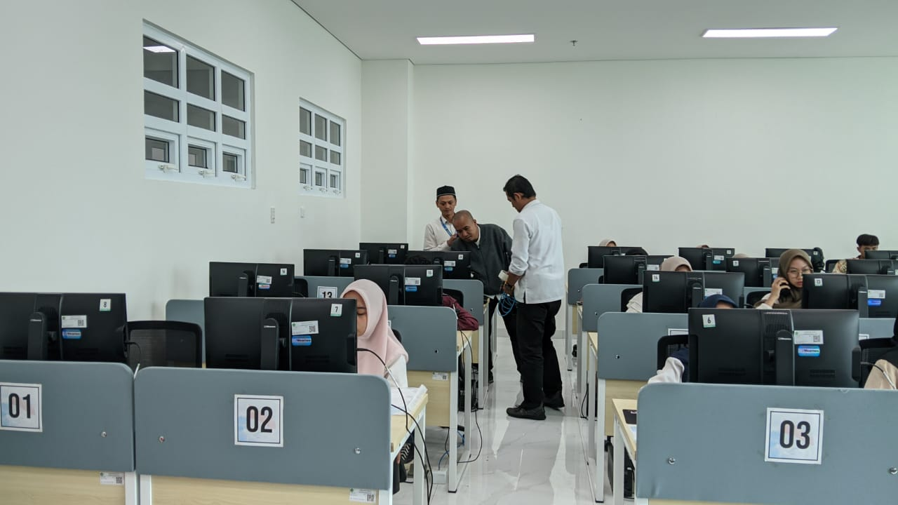

Ujian SSE UM-PTKIN 2025 kembali digelar sebagai jalur seleksi nasional bagi calon mahasiswa PTKIN. Di UIN Sunan Kudus, kegiatan ini mendapat dukungan penuh dari UPT TIPD, unit yang bertanggung jawab atas layanan teknologi informasi kampus.
Sejak persiapan awal, UPT TIPD telah melakukan pengecekan jaringan, menyiapkan perangkat komputer, serta memastikan semua sistem yang digunakan dalam ujian dapat berfungsi dengan baik. Persiapan ini menjadi langkah penting agar pelaksanaan SSE berlangsung tanpa hambatan.
Pada hari pelaksanaan, tim TIPD hadir langsung di ruang-ruang laboratorium untuk memantau jalannya ujian. Mereka memberikan bantuan teknis ketika dibutuhkan, memastikan koneksi tetap stabil, dan mengantisipasi gangguan yang mungkin terjadi. Dukungan ini membantu menciptakan suasana ujian yang kondusif bagi peserta.
Kerja sama antara UPT TIPD dan panitia lokal UM-PTKIN juga berjalan dengan baik. Koordinasi yang rapi membuat seluruh tahapan, mulai dari pembukaan sistem hingga penyelesaian sesi ujian, dapat dilakukan secara tertib sesuai ketentuan.
Kerja sama antara UPT TIPD dan panitia lokal UM-PTKIN juga berjalan dengan baik. Koordinasi yang rapi membuat seluruh tahapan, mulai dari pembukaan sistem hingga penyelesaian sesi ujian, dapat dilakukan secara tertib sesuai ketentuan.
Melalui peran aktif ini, UIN Sunan Kudus menunjukkan komitmennya untuk terus menghadirkan layanan digital yang berkualitas. Ujian SSE UM-PTKIN 2025 menjadi salah satu bukti bahwa dukungan teknologi memiliki peran penting dalam mewujudkan layanan pendidikan yang modern dan efisien.